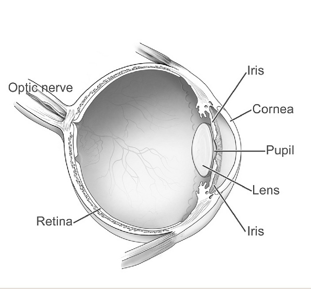
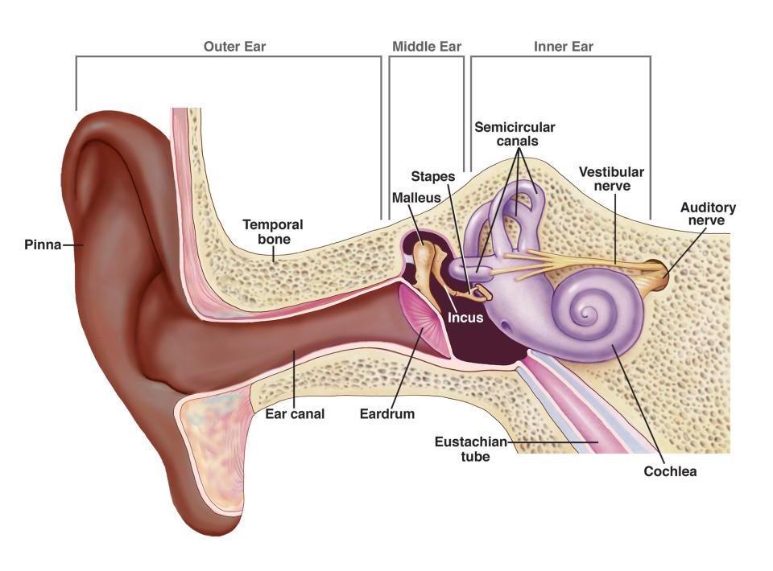

The Big Picture: From World to Brain
Every experience you have begins with your sensory organs detecting stimuli from the environment. This process, called Sensation, is the raw, uninterpreted data collection phase of processing. It involves specialized receptors in your eyes, ears, skin, nose, and tongue picking up physical energy (like light waves or sound waves) and chemical signals.
But how does a physical light wave become a neural signal your brain can actually understand? That happens through a process called Transduction. Transduction is the critical bridge between the physical world and the psychological world. It is the translation of incoming sensory energy into neural impulses.
1.Thresholds: When Do We Notice?
Our senses are incredibly sensitive, but they aren't infinite. There are limits to what we can detect.
- Absolute Threshold
- The minimum amount of stimulus energy required to detect a particular stimulus 50% of the time. (e.g., Seeing a candle flame 30 miles away on a clear, dark night).
- Difference ThresholdJust Noticeable Difference (JND)
- The minimum difference between two stimuli required for a person to detect that they are different 50% of the time.
- Weber's Law
- A principle stating that to be perceived as different, two stimuli must differ by a constant minimum percentage (rather than a constant amount). If you are holding a 100-pound weight, adding 1 pound won't be noticeable. But if you are holding a 1-pound weight, adding 1 pound is extremely noticeable.
- Sensory Adaptation
- The diminishing sensitivity to an unchanging stimulus over time. It's why you stop noticing the hum of an air conditioner a few minutes after entering a room, or why a strong perfume fades from your awareness the longer you're around it. Your senses are built to prioritize change, not constants.
When Senses Team Up
Your sensory systems rarely work in total isolation. Sensory Interaction is the principle that one sense can influence another. Think about how a stuffy nose makes food taste bland, since smell and taste are quietly working together behind the scenes to create what you perceive as "flavor."
In rare cases, this blending goes much further. Synesthesia is a condition in which stimulation of one sense involuntarily triggers an experience in a completely different sense. Someone with synesthesia might "see" the color blue every time they hear the note C, or perceive certain words as having a specific taste.
2.Vision: Catching the Light
Vision is our dominant sense. The transduction of light energy into neural messages happens in the eye, following a very specific pathway:
- Cornea
- The clear, protective outer layer that covers the front of the eye and bends light to help provide focus.
- Pupil
- The adjustable opening in the center of the eye through which light enters.
- Iris
- A ring of muscle tissue that forms the colored portion of the eye around the pupil. It controls the size of the pupil opening based on light intensity and emotions.
- Lens
- The transparent structure behind the pupil that changes shape (accommodation) to help focus images on the retina.
- Retina
- The light-sensitive inner surface of the eye, containing the receptor rods and cones plus layers of neurons that begin the processing of visual information.
When this focusing system doesn't work quite right, the result is a refractive error. Nearsightedness (Myopia) occurs when images from distant objects focus in front of the retina instead of directly on it, making faraway objects look blurry while close-up objects stay sharp. Farsightedness (Hyperopia) is the reverse problem: images from nearby objects focus behind the retina, so close-up objects blur while distant ones stay clear.

The Photoreceptors: Rods and Cones
Transduction actually occurs in the very back of the retina in specialized cells:
- Rods
- Retinal receptors that detect black, white, and gray. They are highly sensitive to dim light and are necessary for peripheral and twilight vision, and they play a key role in light and dark adaptation. That's the reason your eyes need a few minutes to adjust when you walk from a bright room into a dark movie theater.
- Cones
- Retinal receptor cells that are concentrated near the center of the retina (the fovea). They function in daylight or well-lit conditions and detect fine detail and color.
Color Vision Theories
How do we perceive millions of different colors? Two theories explain this process at different stages:
- Young-Helmholtz Trichromatic Theory
- The theory that the retina contains three different types of color receptors (one most sensitive to red (long wavelengths), one to green (medium wavelengths), one to blue (short wavelengths)) which, when stimulated in combination, can produce the perception of any color. This explains color processing at the level of the cones.
- Opponent-Process Theory
- The theory that opposing retinal processes (red-green, yellow-blue, white-black) enable color vision. For example, some cells are stimulated by green and inhibited by red. This explains color processing in the ganglion cells and the brain, as well as afterimages.
⚠️ Don't Trip Up! The Blind Spot: There is a point where the optic nerve leaves the eye, creating a "blind spot" because no receptor cells are located there. You don't notice it because your brain automatically fills in the missing information based on the surrounding area.
⚠️ Don't Trip Up! Color Theories: Trichromatic Theory and Opponent-Process Theory are NOT competing theories; they are complementary! Trichromatic explains the cones in the retina, while Opponent-Process explains the neural layers moving toward the brain.
When Vision Breaks Down
Because color vision depends on cones and ganglion cells working correctly, damage or irregularities in either can lead to Color Vision Deficiency, more commonly (if imprecisely) called color blindness. This can take the form of Dichromatism, where a person can only perceive two of the three primary colors, or the much rarer Monochromatism, where someone sees only shades of a single color, or just black, white, and gray.
Damage further along the visual pathway, mainly to the occipital lobes, can produce even stranger effects. Prosopagnosia, or "face blindness," leaves a person unable to recognize or distinguish faces, even those of close family, despite otherwise normal vision. Even stranger is Blindsight, a condition where a person can respond to a visual stimulus, like reaching for or dodging an object, without ever consciously experiencing having seen it at all.
3.Hearing (Audition): Catching the Wave
Hearing involves the transduction of sound waves (changes in air pressure) into neural signals. A sound wave's wavelength determines the pitch we hear, while its amplitude determines the loudness. The ear is divided into three sections:
- Outer Ear
- The visible part (pinna) funnels sound waves down the auditory canal to the eardrum, causing it to vibrate.
- Middle Ear
- The chamber between the eardrum and cochlea containing three tiny bones (hammer, anvil, and stirrup) that concentrate the vibrations of the eardrum on the cochlea's oval window.
- Inner Ear
- The innermost part of the ear, containing the cochlea, semicircular canals, and vestibular sacs.
- Cochlea
- A coiled, bony, fluid-filled tube in the inner ear. Sound waves traveling through the cochlear fluid trigger nerve impulses.
- Hair Cells
- The sensory receptors embedded in the basilar membrane of the cochlea. When the fluid moves, these hair cells bend, which triggers the actual transduction of sound into electrical signals sent via the auditory nerve.

Pitch Perception Theories
- Place Theory
- Links the pitch we hear with the exact place where the cochlea's membrane is stimulated. (Best explains high pitches).
- Frequency Theory
- The rate of nerve impulses traveling up the auditory nerve matches the frequency of a tone, thus enabling us to sense its pitch. (Best explains low pitches).
- Volley Theory
- Groups ("volleys") of neurons take turns firing in rapid succession, combining their individual firing rates to keep up with tones too high-frequency for any single neuron to track alone. (Fills the gap between what Place and Frequency Theory can each explain on their own).
Locating Sound and Losing It
Sound Localization is how we identify where a sound is coming from, mostly by comparing tiny differences in timing and intensity as a sound reaches each ear separately. A sound from your left reaches your left ear a fraction of a second before your right, and your brain uses that gap to triangulate the source.
When the auditory system is damaged, hearing loss can result. Conduction Deafness occurs when damage to the mechanical structures that conduct sound to the cochlea, like the eardrum or the tiny bones of the middle ear, prevents vibrations from getting through. Sensorineural Deafness is usually more serious and permanent, resulting from damage to the cochlea's hair cells or to the auditory nerve itself.
4.The Chemical Senses: Taste and Smell
Unlike vision and hearing, which respond to energy waves, taste (gustation) and smell (olfaction) respond to chemical molecules.
- Taste
- A chemical sense utilizing receptors in taste buds (located on the papillae of the tongue). The basic tastes are sweet, sour, salty, bitter, umami (savory), and the more recently recognized Oleogustus, the taste of fat. Taste sensitivity also varies by person: those with a higher-than-average number of taste buds are Supertasters, especially sensitive to bitter flavors; those with an average count are Medium Tasters; and those with relatively few are Nontasters, who need much stronger flavors to notice the same tastes.
- Smell
- Olfactory receptors in the nasal cavity catch airborne molecules. Unlike all other senses, smell bypasses the sensory switchboard (the thalamus) and goes directly to the olfactory bulb, which is closely connected to the limbic system. This is why smells often trigger vivid emotional memories. Smell also detects Pheromones, chemical signals released by an organism that can communicate information to, and influence the behavior of, other members of the same species.
5.The Body Senses: Touch, Pain, Movement, and Balance
We often forget we have senses beyond the main five, but a whole set of body-based senses is working constantly to keep you comfortable, safe, and moving through the world without falling over.
Touch (Somatosensation)
Touch, also known as Somatosensation, relies on a network of receptors in the skin and other tissues that detect pressure, temperature, and pain, sending that information to the brain for processing. One of the stranger quirks of this system: the sensation of "hot" isn't produced by a single dedicated heat receptor. Instead, it results from your warm receptors and cold receptors firing at the same time. Your brain interprets that unusual combined signal as "hot," which is part of why intense cold can sometimes feel like a burn.
Pain
Pain is processed both in the body and in the brain, and psychologists still don't have one single, complete explanation for how it works. The most influential attempt is Gate Control Theory, which proposes that the spinal cord contains a neurological "gate" that can either block pain signals from reaching the brain or let them through, depending on other sensory input and even messages coming down from the brain itself. That's part of why rubbing an injury can genuinely make it hurt less.
Pain can also persist in strange ways. Phantom Limb Syndrome occurs when a person who has lost a limb continues to feel sensation, including pain, seemingly coming from the limb that's no longer there. It's a reminder that pain isn't just about what's happening at the injury site, but about how the brain continues to represent the body even after it's changed.
Movement and Balance
Beyond touch and pain, two more body senses keep us moving fluidly:
- Kinesthetic Sense
- The system for sensing the position and movement of individual body parts. Receptors are located in your muscles, joints, and tendons. Without it, you wouldn't be able to touch your nose with your eyes closed.
- Vestibular Sense
- The sense of body movement and position, including the sense of balance. The biological gyroscope for this sense relies on fluid in the semicircular canals and vestibular sacs located in the inner ear.
⚠️ Don't Trip Up! Vestibular vs. Kinesthetic: Kinesthetic is about your Knees, joints, and individual body parts. Vestibular is about your overall head/body balance (and is controlled by the inner ear).
6.Key Terms in This Topic
7.Practice This Topic
Test yourself on exactly what you just read, then mix it up with games and puzzles. The numbers on each button show how much material is waiting for you.
The same self-check questions that close your guided notes. Find out whether thresholds and the senses stuck.
Start Quick Check →Flip through the key terms from this topic, including rods, cones, and the parts of the ear.
Open the deck →AP-style multiple choice on thresholds, vision, hearing, and the other senses, with an explanation after every answer.
Take the quiz →You've reached the end of Unit 1. Mix it up to review the whole unit before you move on.